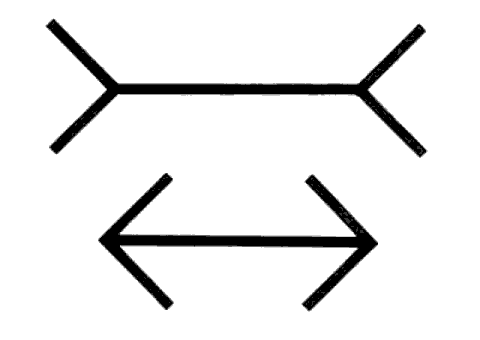
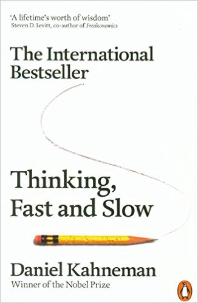
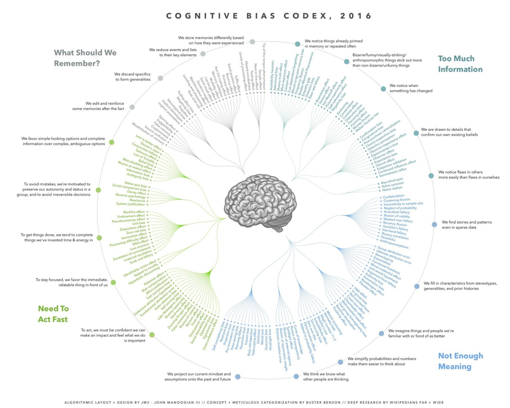

11
Frustrated? It's probably your fault!
Effective Communication
with the Mutual Learning Model
Who Am I?
Topics
Biases and Distortions
Goals and Values
Analysing an Interaction
8 Behaviours for Mutual Learning
Practicing Interactions
Effective Communication
You probably suck at it
... and you don't realise it
Müller-Lyer Illusion

Thinking, Fast and Slow

Thinking Systems
System 1
: fast, involuntary, no effort, biased
System 2
: slow, voluntary, effortful, lazy
Most of what you think and do originates in System 1 with System 2 called upon to prevent errors
The error prevention sucks
This is a major cause of conflict between people
Cognitive Biases
There are hundreds of them!
For example...
Illusion of asymmetric insight
Illusion of transparency
Self-serving bias
Confirmation bias

Topics
Biases and Distortions
Goals and Values
Analysing an Interaction
8 Behaviours for Mutual Learning
Practicing Interactions
Topics
Biases and Distortions
Goals and Values
Analysing an Interaction
8 Behaviours for Mutual Learning
Practicing Interactions
Topics
Biases and Distortions
Goals and Values
Analysing an Interaction
8 Behaviours for Mutual Learning
Practicing Interactions
Topics
Biases and Distortions
Goals and Values
Analysing an Interaction
8 Behaviours for Mutual Learning
Practicing Interactions
Fin
Any questions?